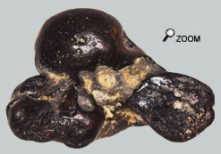
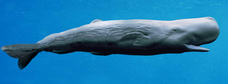
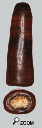

|
Le cétacé des grands fonds…

Oryctérocetus est un Physétéridé, genre aujourd’hui limité aux seules espèces de cachalots réparties en 2 genres.
Au miocène, ces cachalots étaient environ 5 fois plus petits que la plus grosse des espèces actuelles Physter Catodon. Orycterocetus devait avoir plus l’allure générale de la petite espèce Kogia Breviceps, avec un melon moins hypertrophié.
 Généralement Orycterocetus se signale dans les faluns par la présence de dents caractéristiques et par quelques rochers. la présence de dents caractéristiques et par quelques rochers.
Le rocher ci-contre doit représenter l’os d’un Physéteridé. On en rencontre parfois dans les collections mais il faut bien reconnaitre que les restes de cachalots au même titre que les fossiles d’autres cétacés ne sont pas abondants dans les faluns d’Anjou Touraine.
Par habitude, il est dit que le cachalot des faluns, c’est Orycterocetus! Mais c'est sûrement un peu simpliste, au miocène on reconnaît plusieurs espèces de physteridés et même de plus en plus au fil des découvertes. L'histoire de ces mammifères reste donc encore une fois, en grande partie à écrire.
Le roi des abysses...
L’écologie des cachalots explique la faible abondance des restes d’Orycterocetus. Les cachalots sont des mammifères de haute mer spécialisés dans la capture de céphalopodes. Ils vivent au large et chassent des calamars de taille moyenne en surface et des calamars géants en profondeur. Le cachalot est un animal époustouflant. Il est capable de descendre en apnée à plus de 1000 m de profondeur pour chasser ses proies les calamars.
Mais alors que se passe-t-il au fond de la mer?
Le cachalot détecte ses proies grâce à l’écholocation et certains pensent même qu’il utilise aussi
 ces trains d’ondes phoniques pour étourdir les calamars. Le nez énigmatique rempli de graisse du cachalot participe à cette technique. Une fois repérée et immobilisée, la proie est littéralement aspirée par le cachalot.
La dentition impressionnante des cachalots n’est peut-être pas très fonctionnelle. Ces dents ne servent que pour les expéditions sous-marines qui se passent mal. Il existe des calamars aussi gros que les cachalots. Lors de combats rapprochés, les dents peuvent se montrer déterminantes pour terrasser la proie.
La découverte de dents d’Orycterocetus dans les faluns peut s’expliquer par l’échouage de corps de cachalot sur les plages du miocène.
Les cônes d'ivoire...
 Les dents des cachalots du miocène sont longues et coniques, certaines étant presque rectilignes, les autres étant un peu courbées.
Le schéma de base d’une dent est le suivant :
Un cône d’ivoire et de pulpe dentaire ossifiée. On peut observer parfois certaines rides longitudinales et des anneaux de croissance le long du cône d’ivoire.
Une cavité pulpaire : A la base du cône, il existe une cavité pulpaire où s’élabore l’ivoire de croissance de la dent. La croissance de la dent se fait à la base de la dent dans la cavité. Périodiquement la pulpe ajoute une nouvelle couche d’ivoire et la dent émerge progressivement de la mâchoire.
Une gaine de cément de 3 à 5 mm. Cette couche de cément plus fragile, plus terne et d’aspect plus poreux que le cône interne. Elle gaine littéralement toute la longueur de la dent. Toutefois, le haut de la couronne de certaines dents est abrasé par l’usage. A cet endroit le cône d’ivoire émerge souvent de la gaine de cément. Par ailleurs cette couche étant plus fragile, elle n’est pas conservée systématiquement lors de la fossilisation. La dent présentée ici a perdu cette couche de cément.
La morphologie de la dent varie avec sa position sur les mâchoires (les cachalots du miocène pouvant conserver des dents sur le maxillaire), avec l’âge de l’animal, et surtout il doit exister des variations dépendant des espèces rencontrées. De fait on rencontre une variabilité importante des dents rencontrées. |